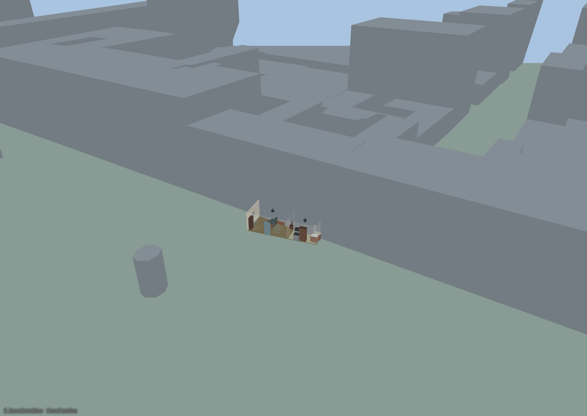
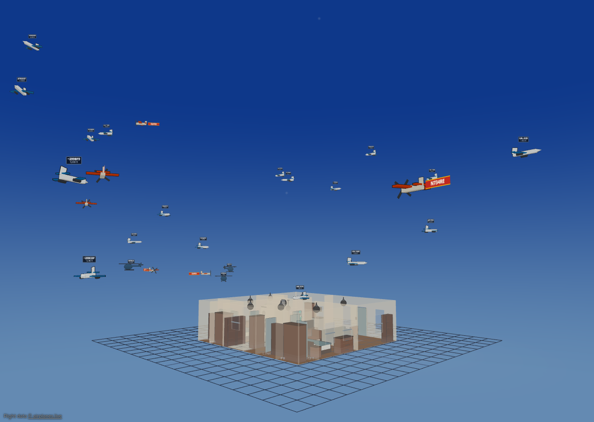

Neighborhood & flights#
Two optional features put your home in a wider setting: the neighborhood overlay draws the surrounding buildings, roads, and water from OpenStreetMap data, and flight tracking puts real aircraft overhead — and the ISS — into your 3D sky.
Both are off by default, both are switched on in Settings ▸ Integrations, and both need Diorama to know where your home actually is. Calibrate at least one GPS landmark (see Weather, sky & geo) before you turn either on — flight tracking will also settle for a weather location.
The neighborhood overlay#

With the overlay on, the block around your house appears in both views: extruded toon buildings, road ribbons, water, and (optionally) land-use areas — positioned, rotated, and scaled by your landmark calibration, so your plan sits in its real footprint.
Turning it on#
- Calibrate your landmarks first. Without a usable fit the overlay stays inert and the sidebar says so.
- Open Settings ▸ Integrations ▸ Neighborhood (OpenFreeMap) and enable it.
- Set the radius (100–3000 m) of the area to fetch around your home.
- Leave the source on OpenFreeMap's public tiles, or point it at your own tile URL template if you self-host.
Tiles are fetched once and cached in your browser for 30 days, so the overlay costs nothing on later loads. Clear cache in the settings block and Refresh tiles in the sidebar re-fetch when the map data has moved on.
The overlay is inert offline and in the live demo.
Tuning it in the sidebar#
Day-to-day controls live in the sidebar's Neighborhood section:
- Show neighborhood and per-layer checkboxes for buildings, roads, water, and land use (land use is off by default).
- Vertical scale (0.2–3×) and default level height (2–5 m).
- Align — arrow nudges and ↺ / ↻ rotation buttons (0.5° and 5°) to slide the overlay onto your plan when the fit is a little off, plus Reset alignment. Each nudge is a single undo step, and they share the move step you set in the Floors section.
- Opacity (0.3–1) and colors for buildings, roads, and water.
- Refresh tiles.
Alignment, scale, color, and exclusion edits all re-draw from the cached tiles — they never re-download anything.
About building heights. Most OpenStreetMap buildings carry no height
data. Diorama uses a real height when the data has one, estimates from the
number of levels when it has those, and otherwise assumes a single storey.
Treat the skyline as an impression of the block, not a survey.
Excluding your own property#
The overlay would happily draw a low-resolution box where your carefully built house stands. Draw an exclusion area to prevent that: pick the exclusion tool, click 3–12 corners around the footprint you want left out, and double-click or press Enter to finish (Esc cancels).
- Buildings whose footprint touches an exclusion area are dropped entirely; road segments are dropped when their midpoint falls inside.
- Exclusions show as dashed red outlines while editing, and are listed in the Neighborhood section.
- There's no vertex editing yet — to reshape one, delete it and redraw.
Layer, drawing order & attribution#
The overlay has its own Neighborhood 2D layer. Neighborhood ground features draw underneath your own painted ground areas, so your yard always wins over OpenStreetMap's idea of it.
Whenever the overlay is on and showing data, a small © OpenStreetMap · OpenFreeMap credit appears in the bottom-left corner in every mode. It isn't configurable — attribution is a condition of using the data.
Flight & satellite tracking#

Diorama can show the aircraft that are genuinely overhead right now — from live ADS-B data — as little toon planes crossing your sky, plus a dot for the International Space Station.
Turning it on#
Open Settings ▸ Integrations ▸ Flight tracking and check Show aircraft & satellites. The status line at the top of the block tells you what's happening: disabled, needs a location — calibrate a GPS landmark or set a weather location, needs a Home Assistant rest_command, needs a Home Assistant connection, fetch failing — check source settings, or a live N aircraft · updated Ns ago.
Why most sources go through Home Assistant#
A browser may only read a response from another site if that site explicitly says so, with an Access-Control-Allow-Origin header. Command-line tools like curl never ask for that permission, which is why an ADS-B URL can return perfect JSON in a terminal and still be unreadable to the panel. There is no longer any keyless, browser-readable ADS-B feed.
So Diorama has Home Assistant make the request instead, using a small rest_command you paste into configuration.yaml. The settings block writes that YAML out for you, filled in with your own location and radius, with a copy button. Change the radius later and you never touch the YAML again — the URL is templated, not baked in.
Then pick a source:
| Source | What it is | Watch out for |
|---|---|---|
| OpenSky Network | The default. Fetched by Home Assistant through a rest_command. | Needs the one-time YAML block. Anonymous access is limited (roughly 400 credits/day, ~4000 with a free account), so it polls every 60 s by default. It carries no aircraft registry data, so airline liveries still work but military skins, privacy dimming and type-specific models don't. |
| adsb.lol | Also fetched by Home Assistant through a rest_command. | Needs the same YAML block. Richer than OpenSky — full aircraft type, operator and military/privacy flags. |
| Local receiver (LAN) | Your own dump1090 / readsb / tar1090 aircraft.json. Freshest data, nothing leaves your network. | Two ways to set it up — see below. |
| Home Assistant entity | A rest/template sensor that fetched the data server-side; its attributes carry the aircraft list. | Works, but pushes the whole aircraft list through HA's state machine and recorder every poll. The rest_command options above avoid that. |
| Demo (synthetic traffic) | Invented aircraft on fixed circuits. No network, no Home Assistant. | Not real traffic. It's for previewing the feature, or for a display that has no data source. |
| airplanes.live | Formerly the default. | Requires you to be a feeder — you contribute data from your own receiver. Public requests return 403. Kept selectable for feeders, but see below. |
If you're an airplanes.live feeder, use your own receiver instead. Access
requires feeding them data, which means you already have an ADS-B receiver on
your network. Pointing Diorama at it directly gives you the same aircraft
sooner, off your own hardware, without the round trip out to their API — and
it's the lightest option available. Set it up as Local receiver (LAN)
below.
Setting up a local receiver#
Your receiver's web server does not send the Access-Control-Allow-Origin header on aircraft.json by default, so the panel can't read it directly. And if Diorama is served over HTTPS while the receiver is plain HTTP, the browser blocks the request outright as mixed content — no header fixes that.
You have two options. Fetch directly if you can — it's meaningfully lighter, for reasons worth understanding before you choose.
Option 1 — fetch directly from the browser (preferred). Add the header to the receiver. For tar1090's lighttpd, drop a file into /etc/lighttpd/conf-enabled/ and restart lighttpd:
$HTTP["url"] =~ "^/tar1090/data/aircraft\.json$" {
setenv.add-response-header = ( "Access-Control-Allow-Origin" => "*" )
}nginx wants add_header Access-Control-Allow-Origin *; and Apache Header set Access-Control-Allow-Origin "*" on the same location.
Option 2 — let Home Assistant fetch it. Nothing on the receiver changes. Enter a service name in the settings block and paste its generated YAML:
rest_command:
diorama_local_adsb:
url: http://192.168.1.50/tar1090/data/aircraft.json
method: GET
timeout: 10Home Assistant is on your network and fetches server-side, so neither CORS nor mixed content applies. Use this when option 1 isn't available — an **HTTPS panel**, where a direct fetch is impossible at any efficiency, or when you'd rather not touch the receiver's web server.
Leave the service name empty to keep fetching directly; fill it in to switch to Home Assistant.
##### Why direct is lighter
A local receiver reports everything its antenna hears. The radius setting filters after the fetch, on your device — so a 15 nm radius doesn't shrink the payload at all. Measured against a real capture, a readsb aircraft row is about 520 bytes:
| Aircraft heard | Payload | At an 8 s poll |
|---|---|---|
| ~100 | ~52 KB | ~6.5 KB/s |
| ~300 | ~156 KB | ~20 KB/s |
Fetched directly, that's one hop from your browser to the receiver. Through Home Assistant the same bytes cross the wire twice — receiver to HA, then HA to the panel — and HA does an HTTP request, JSON handling and a WebSocket frame on every poll.
The part that matters most isn't the kilobytes: the return trip rides the same WebSocket that carries live device state at around 10 Hz, the stream driving your avatars and everything that makes the panel feel live. Adding 50–150 KB to it every 8 seconds competes with that. A direct fetch keeps aircraft traffic off Home Assistant entirely.
Latency isn't a factor either way — one hop versus three is a few tens of milliseconds, and aircraft are dead-reckoned between polls, so you'd never see it.
None of this applies to OpenSky or adsb.lol: there the proxy is mandatory and there's no choice to weigh.
Without Home Assistant#
In the live demo — or any panel running offline — the sources that need Home Assistant report needs a Home Assistant connection rather than pretending to fetch. Two things still work: Demo (synthetic traffic), and a **local receiver** your browser can reach directly. The ISS keeps flying either way; it comes from a separate feed that browsers are allowed to read.
Filters & options#
- Radius (nm) — how far out to search and draw. Default 15, range 5–100.
- Poll (s) — how often to refresh. Range 5–60. The default depends on the source: 60 s for OpenSky, to stay inside its daily credit budget, and 8 s for everything else.
- Min / max altitude (ft) — leave blank for no filter. Useful for hiding cruising traffic and keeping only the approach path over your house.
- Track the ISS — on by default; a live dot in the sky, no binding needed.
Busy airspace is capped to the nearest 50 aircraft.
Sizing the sky#
Two settings decide how big the traffic reads, without changing which aircraft you fetch:
- Draw radius (m) — how far away, in scene metres, an aircraft sitting at exactly your search radius is drawn (default 300, range 60–1000). Raise it and the traffic genuinely moves out and away; lower it and the sky closes in around the house.
- Model size × — a plain size multiplier for every aircraft model (0.5–4). Use it when planes read too small from a zoomed-out camera.
Labels & markings#
- Callsign labels — on by default. With them on, a Label fields grid picks what each label shows: callsign, registration, type, operator, airline, altitude, speed, climb/descent, squawk, and distance.
- Tow banners (small planes) — a small propeller aircraft with a callsign tows a real fabric banner instead of a label plate. Turn it off for plain labels everywhere.
- Airline liveries — on by default; aircraft flying under a recognized airline callsign are painted in that carrier's colors — see Airline identification below.
- Fuselage text and Tow banner text — what gets written down an aircraft's own flanks, and what a small plane's banner says. Also covered below.
- Status beacons — a flashing bead on the fuselage: red for an emergency squawk, yellow for aircraft the feed flags as noteworthy, green for military, white for an FAA privacy program.
- Military aircraft skins — on by default. An aircraft that really is an F-16, F-22, A-10, B-2, B-52, or Apache is drawn with that silhouette instead of the generic model, matched from its type designator, its category, or a military helicopter flag. It's scaled to the same envelope, so labels, beacons, and trails don't move. See Vehicles & aircraft.
- Dim privacy-flagged aircraft — on by default. Aircraft enrolled in the FAA's privacy programs are drawn translucent with a 🔒 badge, and an anonymized one shows only its hex code — a courtesy the raw data doesn't enforce for you.
Your own glow rules#
Want your local medevac helicopter to pulse magenta, or every aircraft from one operator to glow? The Glow rules editor builds an ordered list of rules, each matching on callsign, registration, type, operator, squawk, altitude, speed, distance, or the status flags — military, noteworthy, the two FAA privacy programs (anonymized and blocked), and emergency — with wildcards where you want them.
A match assigns a color (or two, for alternating) and an animation: solid, flash, strobe, rotate, fade, alternate, or none to mute a beacon entirely. The first matching rule wins, so order matters — reorder rows with ▲ ▼. An emergency squawk always shows the red emergency beacon regardless of your rules, and the rules do nothing while Status beacons is off.
Airline identification#
Airliners fly under a callsign whose first three letters name the operator — DAL2891 is Delta, BAW17 is British Airways. Diorama carries a built-in table of 129 operators keyed by that prefix: US mainline, low-cost, regional and cargo carriers, the fractional-ownership fleets, and the major international airlines. When an aircraft's callsign matches, Diorama knows who it is.
The visible payoff is paint. With Airline liveries checked (on by default, in Settings ▸ Integrations ▸ Flight tracking), an identified aircraft is drawn in that carrier's approximate brand colors — the primary on the fuselage, the secondary on wings and tail — in the 3D sky, and the same primary color tints its dart on the 2D plan. A blue-and-red Delta jet and a green Alaska jet read apart at a glance without opening anything. Uncheck the box and every aircraft goes back to its archetype's generic civil paint.
What deliberately isn't painted#
The table is an aid to recognition, not a claim to know more than the feed does, so several cases keep the generic look on purpose:
- Military aircraft keep their own look — the recognizable airframe that Military aircraft skins gives them, or the olive tint from the feed's military flag. A fighter has no airline.
- Privacy-flagged (PIA) aircraft show no airline identity at all. Their whole point is that the identity is withheld; painting a livery on one would undo it.
- Privacy callsigns are recognized as such. The
FFLandDCMprefixes belong to flight-planning services (ForeFlight, FLTPLAN) that issue temporary anonymous addresses, not to airlines. Diorama knows the difference and says so instead of inventing a carrier. - Regional airlines keep the generic livery. A regional's aircraft wears its mainline partner's paint, and one regional often flies for several — SkyWest operates as Delta Connection, United Express, American Eagle and Alaska. Guessing which one this particular flight is would be a fabrication, so the aircraft stays generic and the card tells you honestly who it flies for.
Fuselage and banner text#
Two dropdowns in the same settings block decide what's written on an aircraft, now that Diorama knows who it belongs to:
- Fuselage text — the lettering painted down the aircraft's own flanks. Automatic keeps the shipped layout (the operator broadside on a large fuselage, the identifier along the spine); Operator, Airline, Slogan, and Callsign pin it to one thing; None leaves the paint bare and lets the label plate carry the identity.
- Tow banner text — what a small propeller aircraft's towed banner says. Automatic is its identifier, as before; the other choices are Airline, Slogan, and Callsign. Set it to Slogan and a passing light aircraft trails an airline's tagline across your sky.
Both fall back gracefully rather than going blank: an airline with no slogan on file shows its name instead, and an aircraft with no recognized airline keeps the automatic text. A privacy-flagged aircraft withholds its identity whatever these are set to, and an aircraft wearing a military skin carries no fuselage lettering at all — a fighter has no operator titles, and its identity stays on the label plate.
What you see#
- Aircraft models vary with what the aircraft reports — a prop, a jet, or a helicopter, with a military tint where the data flags it, and a recognizable military airframe where Military aircraft skins can identify one.
- Labels — a small propeller aircraft with a callsign tows a real banner behind it; everything else gets a crisp cel-shaded label. Labels show the aircraft's real altitude.
- Motion stays smooth between polls: Diorama dead-reckons each aircraft along its track and eases it onto the next fix rather than snapping.
- In 2D, aircraft draw as small darts around your plan.
- Toggle the whole thing in either view with the Flights layer.
Not to scale, but true in bearing. An airliner 20 nm away is far outside
the world Diorama can draw. Both distance and altitude are compressed into a
bounded shell around your home so the traffic stays in frame. The direction
an aircraft sits in is exact; its size and spacing relative to your house are
deliberately not.
Inspecting an aircraft#
Click any aircraft — in 3D or on its 2D dart — to open a read-only card with its real altitude, speed, distance, bearing, and how old the fix is, plus status chips for emergency, military, or privacy flags. It keeps updating while it's open and says so plainly when the aircraft leaves the feed. On a touch screen the tap target is forgiving, so you don't have to hit a dart exactly.
The Airline block#
When the callsign identifies a carrier, the card grows an Airline block:
- The full airline name with its two brand-color swatches, and a type chip — MAINLINE, LOW-COST, REGIONAL, CARGO, INTERNATIONAL, CHARTER, FRACTIONAL, FREIGHT.
- The short name, the ICAO three-letter code and the IATA two-letter one.
- How the flight is spoken on the radio —
spoken as DELTA 1234. An airline's telephony word often isn't its brand name (British Airways is "SPEEDBIRD", Aer Lingus is "SHAMROCK"), so this is what you'd hear on a controller feed rather than what the callsign looks like. - The carrier's slogan, where it has a well-known one.
- For a regional, the operates as line naming the mainline brands it flies for — the honest answer in place of a borrowed livery.
Military and privacy flights get their own lines instead of branding:
- A recognized military callsign word is expanded —
REACH, for example, tells you this is Air Mobility Command airlift — along with the usual aircraft type where the word implies one. - An aircraft whose hex code falls in the range widely used by the US military gets a note saying so, labeled as a heuristic: it's a widely observed pattern, not an official allocation, and the card says that rather than asserting it.
- A privacy callsign is spelled out as not a real airline, naming the flight-planning service that issued the temporary address. No branding is shown.
Flight alerts#
The Alerts sub-block feeds Diorama's alert bell:
- Low overflight (ft) — notify when an aircraft passes below this altitude within 3 nautical miles. Blank turns it off. Each aircraft only alerts once every ten minutes, and dismissing one re-arms it after that.
- Watch list — comma-separated callsign prefixes or hex codes (for example
UAL, N12345, a1b2c3); a match raises an alert. - ISS pass alert — fires when the ISS rises above 10° in your sky. It's a live edge detector, not an advance prediction — Diorama tells you the station is up, not that it will be.
A notable flyover also gives nearby figures a ✈️ thought bubble.
Like the neighborhood overlay, an active flight feed adds a small credit chip in the corner naming whichever source is supplying the data. A local receiver and the demo source credit nobody — the data is yours, or invented.